Plomberie
- Recherche et réparation de fuites accessibles
- Remplacement de robinetterie et flexibles
- Remplacement de siphons et petits raccords
- Petites réparations de canalisations
 Aller au contenu
Aller au contenu
LIMOURS ET ENVIRONS · ESSONNE
Plombier Robby vous accompagne pour vos travaux de plomberie et vos petits travaux électriques, à Limours et dans les communes voisines.
Contact direct · Devis selon la nature des travaux
ProximitéLimours et environs
Contact directUn appel pour expliquer votre besoin
Pour votre logementPetits travaux et réparations
CE QUE JE PEUX FAIRE POUR VOUS
Décrivez votre besoin par téléphone afin de vérifier la faisabilité, les disponibilités et le tarif.
Vous avez un autre petit travail à réaliser ? Appelez-moi pour décrire la situation et savoir si je peux intervenir.
Parler de votre projet →Les prestations sont confirmées au cas par cas. Les travaux soumis à qualification, assurance ou réglementation particulière ne sont proposés que si les conditions applicables sont réunies.
MON SAVOIR-FAIRE EN IMAGES
Découvrez quelques photos de travaux de plomberie et de petits travaux électriques.
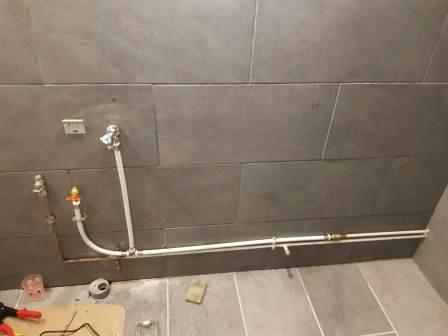
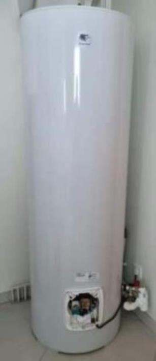
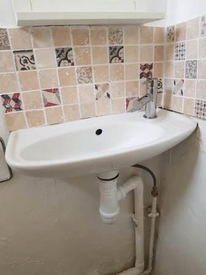
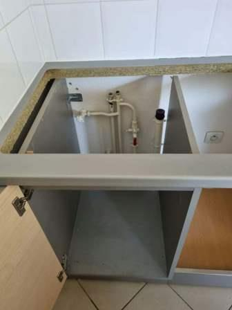
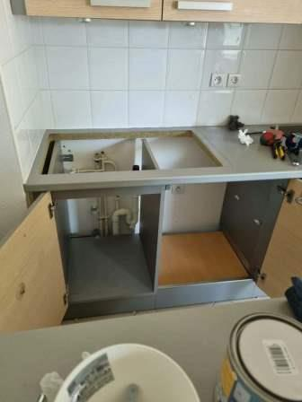
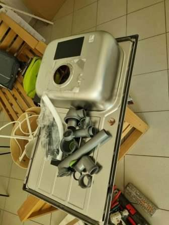
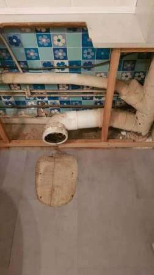
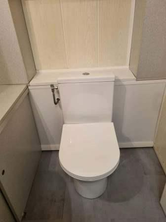
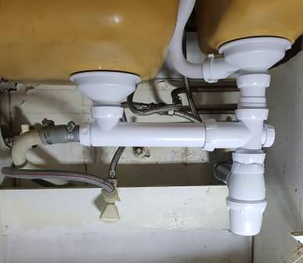
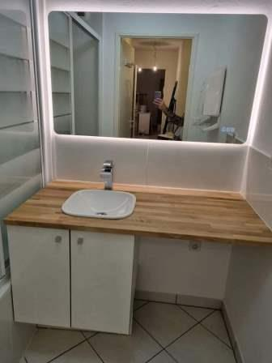
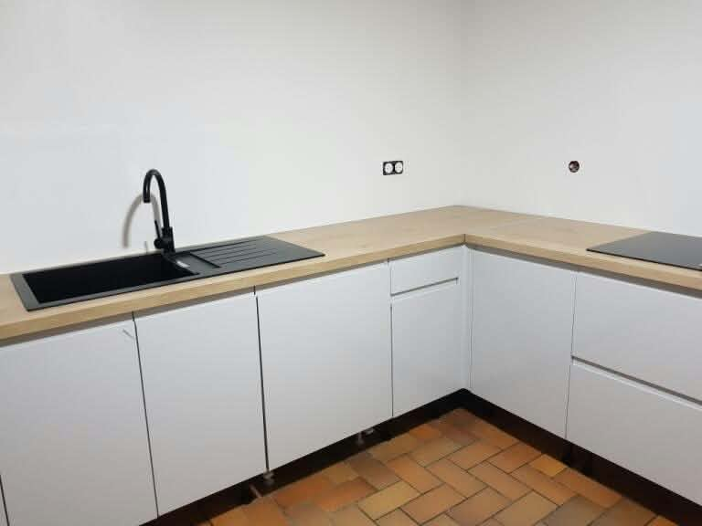
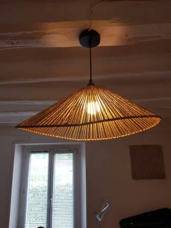
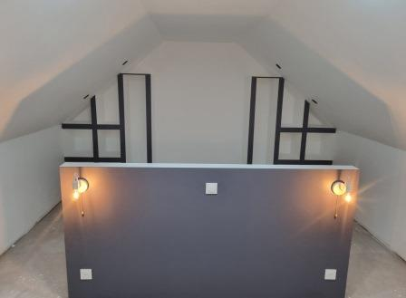
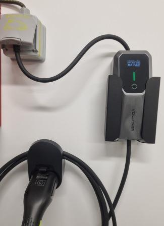
Une question sur un travail à réaliser ? Contactez-moi directement.
SECTEUR D’INTERVENTION
La zone ci-dessous donne une indication des communes proches. Le déplacement et la disponibilité sont à confirmer lors de votre appel.
Vérifier mon secteur par téléphoneLa liste est indicative : toutes les adresses ne sont pas nécessairement à 15–16 km par la route.
CONTACT
Expliquez le problème, indiquez votre commune et, si possible, précisez l’équipement concerné.